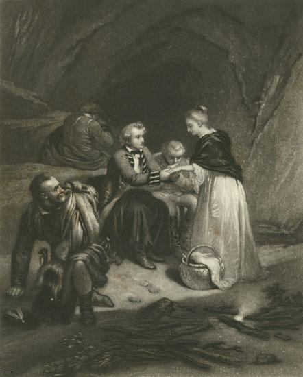

Thearlaich! Nan Tigeadh Tu
Charlie, if you would only come!
Tune
Sequenced by Ch.Souchon



|
No Text known
Scottish Reel. First published as two-part tune in the "Bremner Collection" (c.1770). The last two parts are attributed to the Cape Breton fiddler Donald John Beaton (1856-1919) |
Pas de texte
|